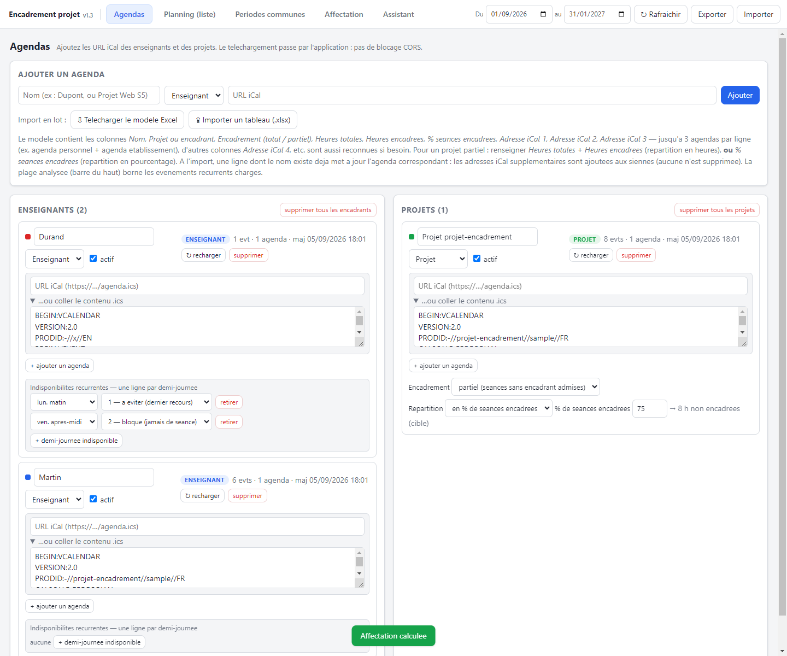
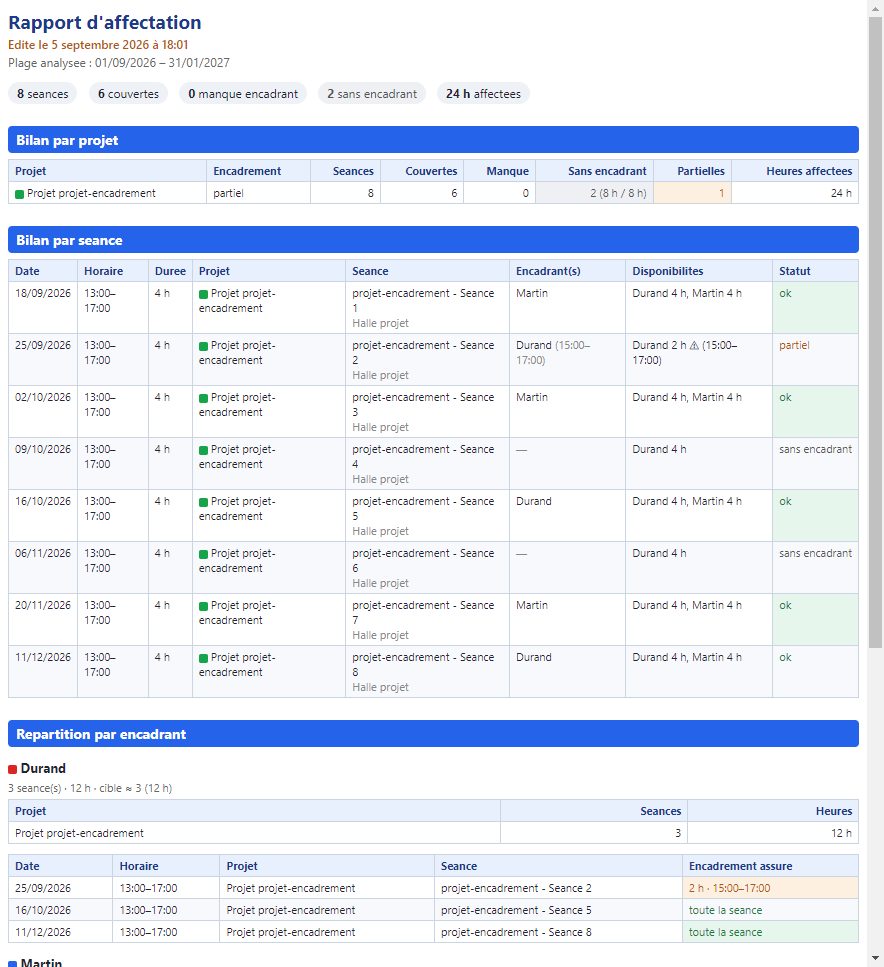
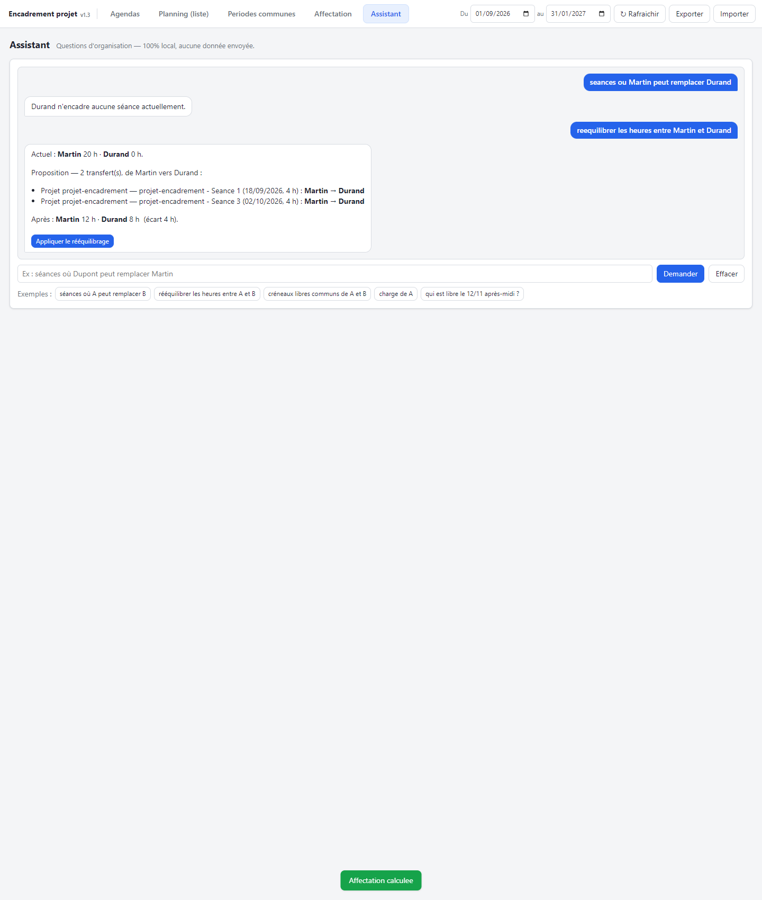

Application de bureau pour lire les agendas iCal des encadrants et des projets, comparer les disponibilités, et répartir automatiquement les encadrants sur les séances de projet.
L'application s'organise en cinq onglets, dans l'ordre où l'on s'en sert : on renseigne les Agendas, on vérifie le Planning, on repère les Périodes communes, on lance l'Affectation, et on interroge l'Assistant.
Encadrement projet Setup 1.3.1.exe crée un
raccourci « Encadrement projet » (menu Démarrer et, au choix, bureau) : on lance l'application par ce
raccourci.Encadrement projet 1.3.1.exe : l'application
démarre directement, sans installation. Au premier lancement, Windows / SmartScreen peut afficher un
avertissement « éditeur inconnu » (application non signée) — cliquer Informations
complémentaires puis Exécuter quand même.npm start dans le dossier du projet..json autonome (sauvegarde, transfert à un collègue).%APPDATA%\Encadrement projet\project.json.
Chaque encadrant et chaque projet possède son ou ses agendas iCal.

.ics dans le champ prévu), puis Ajouter.Un encadrant suit rarement un seul calendrier (agenda personnel + agenda d'établissement…).
Dans sa carte, + ajouter un agenda ajoute une URL (ou un contenu .ics) ;
retirer en supprime une dès qu'il y en a plus d'une. Tous les événements des
agendas d'une même carte sont fusionnés — le reste de l'application n'y voit que du feu.
modele-agendas.xlsx
(+ une feuille Notice) avec les colonnes : Nom, Projet ou encadrant,
Encadrement (total / partiel), Heures totales, Heures encadrées,
% séances encadrées, Adresse iCal 1, Adresse iCal 2, Adresse iCal 3
(colonnes Adresse iCal 4… également reconnues).Les agendas importés restent entièrement modifiables dans l'onglet.
Sur chaque carte Enseignant, sans passer par l'Excel, on ajoute une ligne par demi-journée indisponible — elles n'ont pas besoin d'être contiguës (p. ex. lun. matin et mar. après-midi) — chacune avec son propre degré. Les demi-journées vont de lun. matin à ven. après-midi (coupure du midi à 12 h).
| Degré | Effet sur l'affectation automatique |
|---|---|
| 0 | Disponible — aucune restriction (ne rien saisir). |
| 1 | À éviter : une séance n'y est placée qu'en dernier recours, lorsqu'aucun autre encadrant n'est possible. |
| 2 | Bloqué : aucune séance n'y est jamais placée automatiquement (comme une indisponibilité d'agenda). Un choix manuel reste possible mais est signalé « indispo (récurrent) ». |
X % ⇒ volume horaire × (1 − X/100).Vue chronologique de tous les événements des agendas actifs, groupés par jour.
Comparer plusieurs agendas pour trouver quand tout le monde est libre — ou au contraire tous occupés.
Résultat groupé par jour, avec le total d'heures et un Exporter CSV.
Répartir automatiquement les encadrants sur les séances de projet, en respectant qui est libre, qui encadre quoi, et dans quelles proportions.
Ce sont tous les événements des agendas de type Projet, hors « journée entière » et hors blocs plus longs que la Durée max d'une séance (12 h par défaut — écarte les blocs « vacances » émis par certains flux). Le bandeau du haut résume : nombre de séances, couvertes, manque encadrant, sans encadrant, partielles, à arbitrer, heures affectées.
Un tableau, une ligne par projet : Séances, Couvertes, Manque (sous le
minimum alors qu'un encadrement est attendu — rouge), Sans encadrant (pour un projet partiel :
heures effectives / cible), Partielles, À arbitrer (≥ 2 encadrants
éligibles libres sur toute la séance), Heures affectées.
Une matrice projets × enseignants, plus une colonne Sans encadrant. Chaque case a une coche (« concerné par le projet ») et un poids relatif (1 par défaut). Aucune coche sur un projet ⇒ tous les enseignants éligibles, poids 1.
Les poids définissent le nombre de séances : pour un projet, la part de chacun =
poids / somme des poids du projet (colonne Sans encadrant comprise), appliquée au
volume horaire. Un encadrant présent sur plusieurs projets cumule une cible de chacun. Le même
barème compare donc les encadrants entre eux, les projets entre eux, et « avec / sans encadrant ».
Sous chaque case : N aff. (séances affectées) · cible ≈ (d'après les
poids) · dispo : X compl. + Y part. (séances où l'encadrant est libre).
mois → mois.
Une séance dont le mois tombe dans une plage préférée pèse ≈ une séance de plus dans le choix.En haut du tableau des séances, Vue : bascule entre Par séance (liste chronologique, modifiable), Par projet (groupé, modifiable) et Par encadrant (synthèse en lecture seule : séances et heures par projet, cible).

Durand (15:00–17:00)).Une poignée de questions d'organisation, reconnues par mots-clés — pas de langage libre, mais tout est calculé sur le poste (aucune donnée envoyée à l'extérieur).

Écrire le nom d'un ou deux encadrants (tel qu'il apparaît dans l'onglet Agendas) plus l'un de ces mots-clés :
| Exemple | Réponse |
|---|---|
| séances où Dupont peut remplacer Martin | Liste des séances de Martin que Dupont peut reprendre (couverture complète / partielle / indisponible) + bouton Remplacer. |
| rééquilibrer les heures entre Dupont et Martin | Proposition de transferts de séances du plus chargé vers le moins chargé + bouton Appliquer. |
| créneaux libres communs de Dupont et Martin | Créneaux où les deux sont libres dans la fenêtre de travail. |
| charge de Dupont | Heures affectées vs cible, par projet. |
| qui est libre le 12/11 après-midi ? | Encadrants disponibles à cette date / demi-journée. |
Si un nom correspond à plusieurs encadrants, l'assistant le signale et demande de préciser plutôt que de deviner.
| Réglage | Rôle |
|---|---|
| Nombre cible d'encadrants par séance | Combien d'encadrants l'affectation automatique cherche à placer sur chaque séance. |
| Nombre minimum d'encadrants par séance | Seuil sous lequel la séance est marquée « non couverte » (rouge). En général 1. |
| Durée cible (h) | Longueur de référence d'une séance (4 h). Sert au badge « ≠ 4 h » et au calcul « X h sur 4 h ». |
| Durée max d'une séance (h) | Au-delà, l'événement n'est pas considéré comme une séance (12 h par défaut). Écarte les blocs « vacances » / multi-jours. |
| Poids préférence | Multiplie l'avantage accordé à un encadrant dont une période préférée couvre le mois de la séance. |
| Respecter le plafond d'heures | Si coché, aucun encadrant n'est affecté au-delà de son plafond. |
| Journée entière = indisponible | Un événement « journée entière » (congés, mission) rend l'encadrant indisponible ce jour-là. |
Le nombre de séances de chaque encadrant découle de sa cible = volume horaire du projet × son poids / somme des poids du projet, cumulée sur tous ses projets. L'affectation privilégie à chaque séance l'encadrant le plus loin sous sa cible, parmi ceux libres sur toute la séance (sinon un partiellement disponible, puis en tout dernier recours un encadrant en indisponibilité de degré 1), puis un passage de rééquilibrage rapproche les charges des cibles.
| Situation | À faire |
|---|---|
| Rien ne s'affiche après un import | Vérifier la plage de dates en haut de l'écran, puis Rafraîchir. |
| Des séances « fantômes » de plusieurs jours | Certains flux publient les vacances comme des événements longs : le réglage Durée max d'une séance (Affectation → Réglages) les écarte. |
| Reprendre un projet sur un autre poste | Exporter (barre du haut) → fichier .json → Importer sur l'autre poste. |
| Tout recommencer sur un projet | Affectation → Tout effacer (conserve les agendas et l'équipe). |
| Un encadrant ne doit jamais être placé un jour donné | Sur sa carte (onglet Agendas), ajouter une indisponibilité récurrente de degré 2 sur la ou les demi-journées concernées. |